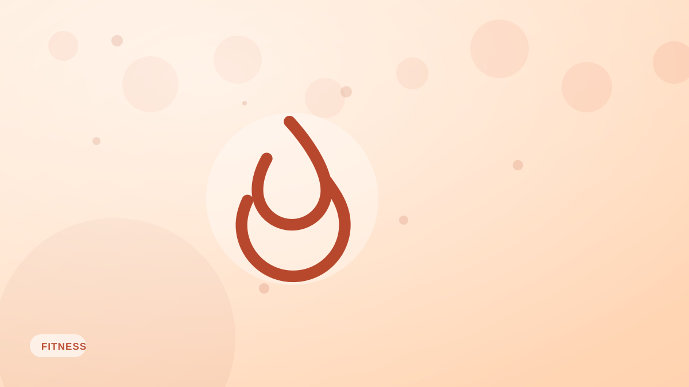

NEAT: el gasto calórico oculto que estás ignorando
>El NEAT —las calorías que quemas con el movimiento cotidiano— puede superar de largo a tus entrenamientos. Qué es y cómo usarlo para perder grasa más fácil.

Cuando pensamos en quemar calorías, imaginamos entrenamientos. Pero para la mayoría, el ejercicio formal es una porción pequeña del gasto energético diario. Una porción mucho mayor y más flexible es el NEAT (termogénesis por actividad no asociada al ejercicio): las calorías que quemas con todo el movimiento que no es ejercicio deliberado.
Qué cuenta como NEAT
Caminar, subir escaleras, cargar la compra, limpiar, cocinar, moverte inquieto, estar de pie, jugar con los niños: todo. Por separado son cantidades diminutas; en conjunto, enormes. El NEAT puede variar en cientos de calorías al día entre dos personas del mismo tamaño.
Por qué importa para el peso
El NEAT es una de las razones por las que hay gente que parece «comer de todo» y seguir delgada: se mueve más sin darse cuenta. También explica que una dieta se estanque: al comer menos, tu cuerpo suele reducir el NEAT en silencio (te mueves menos, caminas más despacio) para ahorrar energía, encogiendo tu déficit sin que lo notes.
Cómo aumentar el NEAT
- Fija un objetivo de pasos: una meta diaria (por ejemplo, 8.000–10.000 pasos) es la palanca más sencilla.
- Camina después de comer: incluso diez minutos ayudan al movimiento y a la glucosa.
- Sube por las escaleras y aparca más lejos.
- Levántate y muévete durante las llamadas y los descansos.
Lo bonito del NEAT
A diferencia de un entrenamiento brutal, el NEAT cuesta poco y es sostenible. Sumar movimiento a lo largo del día quema calorías de verdad sin el coste de recuperación del entrenamiento duro. Combina un objetivo de pasos con el registro de lo que comes en Fotocal y tendrás bajo control los dos lados del balance energético.
Ideas clave
- El NEAT es el movimiento cotidiano fuera del ejercicio, a menudo mayor que los entrenamientos.
- Varía muchísimo entre personas y puede bajar en silencio durante una dieta.
- Un objetivo diario de pasos es la forma más fácil de subirlo.
- El NEAT quema calorías de forma sostenible, sin gran coste de recuperación.